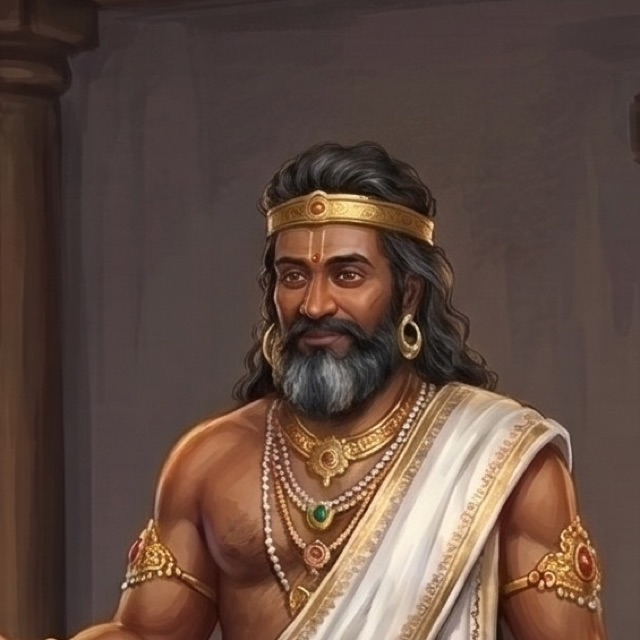
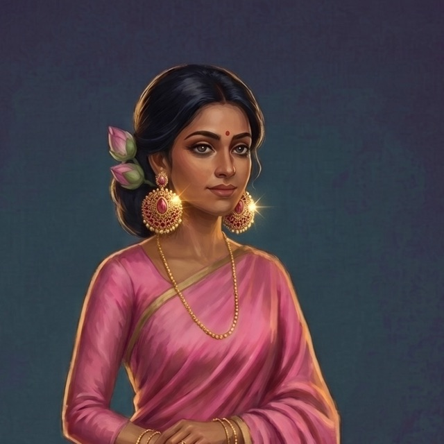

कथा 5 से
उत्तंक की कथा में कौन-कौन है?
कथा 5 से। हर पात्र के लिए एक पंक्ति: केवल वे रिश्ते, जो कथा शुरू होते समय हैं।
पात्र




कौन किसका क्या है
पति-पत्नीगुरु और शिष्य
किसी पात्र पर टैप करें, उसका परिचय दिखेगा।
रील्स
-
5
-
6
-
7
यह पेज कथा 5 देखने के बाद खुलेगा। ऊपर अपनी संख्या बदलें।